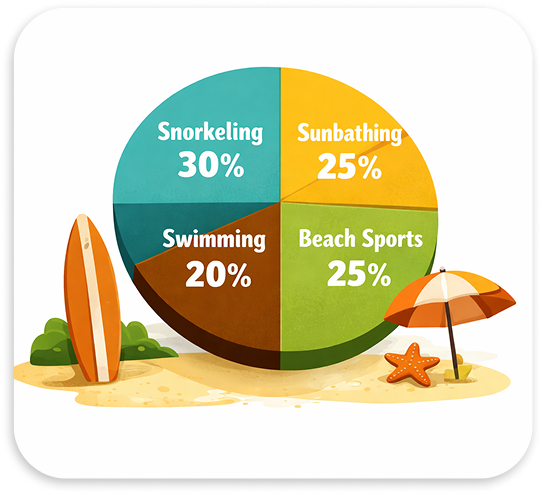
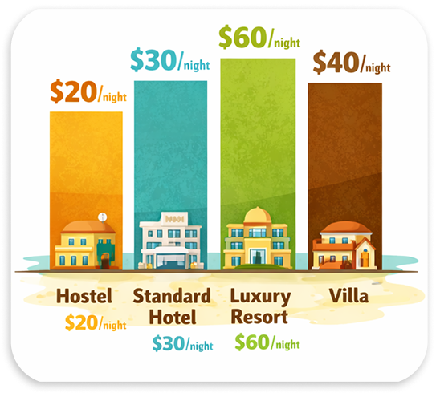

Thailand’s City That Never Sleeps
Pattaya Pulse:
Food, Sun and Neon Nights
From bustling promenades to nearby islands, the city offers an energetic and diverse escape. Discover Pattaya City, with vibrant nightlife and rich cultural landmarks.
 Reading time: 7 min.
Reading time: 7 min.
 Read: 46
Read: 46
 Shared: 23
Shared: 23

Pattaya is a destination full of contrasts, where relaxed beach days blend seamlessly with vibrant city life. Start your morning at a local market, spend the afternoon on nearby islands with crystal-clear water, and end the day exploring colorful night markets or enjoying fresh seafood by the coast. Beyond its lively atmosphere, Pattaya also offers peaceful temples, tropical gardens, and cultural attractions that reveal another side of this dynamic seaside city, making every visit a unique experience.
Rain periods in Pattaya

Pattaya experiences its highest rainfall during the summer months, when tropical showers are frequent and often intense. While the rainy season brings lush landscapes and cooler temperatures, sunshine is still common between showers. Spring and winter are generally much drier, making them ideal for beach activities and sightseeing. No matter the season, checking the local forecast helps you make the most of your stay and plan outdoor adventures with confidence.
Popular beach activities
Pattaya’s beaches offer something for every type of traveler. Snorkeling is one of the most popular activities, allowing visitors to explore colorful marine life in the clear waters around nearby islands. Beach sports such as volleyball and paddle games are also common, while many visitors simply enjoy swimming or relaxing under the sun. Whether you seek adventure or relaxation, Pattaya’s coastline has plenty to offer throughout the year.

Accommodation expenses
Pattaya offers accommodation for every budget, from affordable hostels to luxury resorts. Budget travelers can find hostels from around $20 per night, while standard hotels average $30. Luxury resorts typically cost $60, and private villas around $40 per night. With a variety of options available, visitors can easily find a stay that matches their budget and travel style.

Pattaya is a destination full of contrasts, where lively beaches, cultural landmarks, and peaceful island escapes come together in one unforgettable experience. Whether you spend your days exploring local markets, enjoying water sports, or simply relaxing by the sea, the city offers something for every traveler. With pleasant weather for most of the year, a wide range of accommodation, and countless activities, Pattaya is an excellent choice for both short getaways and longer vacations. No matter your travel style or budget, this vibrant coastal city promises lasting memories and a unique taste of Thailand’s energetic spirit.
Follow me for more content like this, and share the article with your friends!